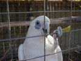
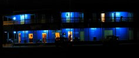
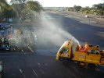
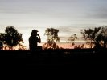
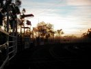

|
The choice was to land either in Weipa or Kowanyama - the latter charges a $20 landing fee whereas the first only wants $12.50 for a touch down. On principal we choose Weipa - why can some really nice airports survive on no (or very cheap) landing fees and others try to make a huge buck by charging enormous amounts (not that $20 is all that bad, but for a little airstrip in the middle of nowhere it seems excessive).

At low levels the air was turbulent and at higher altitudes the headwind was stronger. We decided for the bumpy but slightly faster option resulting in some queasiness passengers.
Apart from some cattle stations (which are not really all that exciting to see from the air) there weren't any particular highlights on the flight to Normanton. You get a very good impression on how vast this country is by flying over pretty much nothing for hours and hours though.
We seem to have been lucky with the weather again. Numerous people have told us that the wet season had extended until very recently (Linda and I are so happy we didn't go around Australia clockwise). The late wet season was also the reason for the postponement of the annual Normanton Rodeo to this weekend.

We stayed at the infamous Purple Pub. It's actually cheap - only $40 for a twin share room with balcony on the first floor - a prime spot for watching the Rodeo parade that passed by shortly after our arrival. The management was very nice and arranged for a pick up at the airport. They also offered to drive us out to the Rodeo grounds later. The owner of the pub, 
who by coincident was on the premises that day, didn't make as good an impression though. He forbid the women who else is in charge to give us that ride and told us to take a taxi instead. So if you ever get to Normanton ask if the owner is on site - if so find another place. If not the Purple Pub is a nice place to be.
So we took the taxi to the show grounds. The real good stuff is on on Saturday and Sunday we were told, but at least there was a quite interesting bull ride that evening - very 

entertaining to see these crazy cowboys trying to stay on even more crazy bulls for as long as possible - I would never do something like that ... unless somebody dares me :-).


|
{kind=link}
{kind=link}
{kind=link}
{kind=link}
{kind=link}